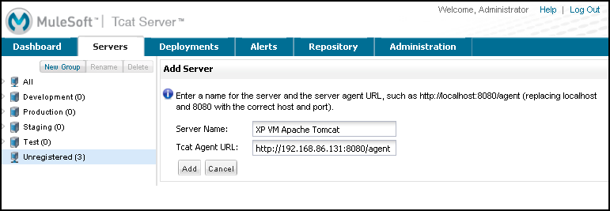
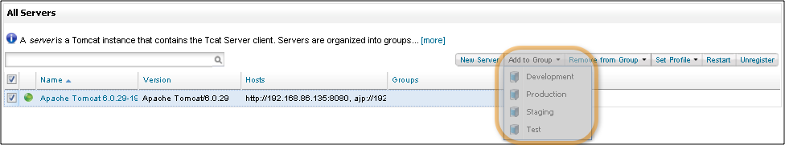

Add Tcat Server Capabilities to an Existing Tomcat Install
Use this procedure to add Tcat Server Monitoring and Management capabilities to an existing instance of the open source Tomcat server. Please send us comments or questions: tcat-install@mulesoft.com
Add Tcat to Existing Tomcat Install
This process explains how to install the Tcat Server on an existing Tomcat server instance, and to use the Administration Console to register, manage, and monitor that server.
Before You Begin
This process requires one or more existing Tomcat instances, as well as an installed instance of Tcat Server with the Administration Console on the same machine or on a different machine. If you use more than one machine, these machines must have TCP network connectivity from the Console to the Tomcat machines you want to manage. The Console must be able to open initial connections over either HTTP (8080 by default) or AJP (8009 by default), and then over the Tcat Agent secure port (51443 by default). All of these port numbers are configurable.
| For instructions on installing Tcat Server with the Administration Console, consult the QuickStart. Instructions on installing Tomcat server are at http://tomcat.apache.org. |
Requirements
| Supported Environments |
|---|
Tomcat 5.5.x or newer, including all Tomcat 6, 7, and 8 releases |
Any operating system that has a fully compliant Java 1.5 or newer JDK or JRE. See Java Runtime Requirements for more details. |
Converting a Stock Tomcat Windows Service Into a Tcat Windows Service
This procedure assumes that you’re converting only a single installation of stock Tomcat per machine to a Tcat Server, but if you’d like to run more than one converted Tomcat installation per server you need to rename each installation’s service name. The default Tcat windows service name is "TcatServer". Wherever you’re seeing "TcatServer" in the below instructions, replace that string with a different service name, and also change conf/Catalina/localhost/tcat-env.conf to contain your modified service name. The file tcat-env.conf only exists after the first successful server registration with the Tcat Server console.
-
Unregister your stock Tomcat from your Tcat Server console, if you had previously installed the agent webapp and registered it. Make sure to remove the agent’s
truststore.jksfile from your Tomcat’swebapps/agent/WEB-INF/directory, if it exists, then restart your Tomcat. -
Install a full Tcat Server installation (Windows service) on a different machine, so that you can copy some of its individual files into your stock Tomcat Windows service installation directory tree. You do not need to start it – just install it to unpack the files. Make sure the Tcat Server that you install is version "Tcat 6 R4" (6.4.0 or newer).
-
Copy the following files from the Tcat installation to the Tomcat installation:
-
TcatServer6\bin\tcat6.battoTomcat6\bin\tcat6.bat -
TcatServer6\bin\tcat-service.battoTomcat6\bin\tcat-service.bat -
TcatServer6\bin\catalina.battoTomcat6\bin\catalina.bat -
TcatServer6\bin\prunsrv64.exetoTomcat6\bin\prunsrv64.exe -
TcatServer6\bin\prunsrv32.exetoTomcat6\bin\prunsrv32.exe -
TcatServer6\bin\prunmgr.exetoTomcat6\bin\TcatServerw.exe
Modify the service name in the destination filename if you are customizing the service name.
-
-
Open an administrator shell and change directory into your Tomcat’s
CATALINA_HOMEdirectory. -
Make sure that the
JAVA_HOMEorJRE_HOME(not both) environment variable is set properly to your choice of Java VM in the current shell environment. Take extra care to verify that it is set exactly right. -
Run the Tcat Windows service installer, passing the Windows service name you want to use for this Tcat Server installation, like this:
Tomcat 6>cd bin Tomcat 6\bin>tcat-service install TcatServerCarefully inspect the last line of the output of this command. If it results in an error such as "Failed installing 'TcatServer' service", then it is likely that you already have a service with that name installed, and you need to perform the above steps over with a different service name.
-
Copy the Tcat Server agent.war webapp archive into your Tomcat’s
webapps/directory, assuming you have not already done so. -
Restart your Tomcat via the stock Tomcat windows service. After Tomcat restarts, use the Tcat Server console to register your Tomcat server. Do not restart it from the console yet!
-
In your stock Tomcat’s installation tree, edit the file
conf/Catalina/localhost/tcat-env.conf
If you are naming this server’s Tcat service name something other than the default "TcatServer" name, then change all occurrences of:-Dtcat.service=TcatServer
to your customized service name. Don’t modify any other settings yet. -
Shut down your stock Tomcat windows service.
-
Start your Tcat Server windows service by running this from your admin shell:
Tomcat 6\bin>tcat6 start
Or, if you’re customizing the service name, give your modified service name as a second argument:
Tomcat 6\bin>tcat6 start MyServiceName
That’s it. Your Tomcat is now running as a Tcat Server windows service.
From the Tcat console, the server should be available. Inspect it. Try a Tcat Server restart. Click the Restart Server button for this server. This should restart the new Tcat Server windows service, and bring it back up. From this point onwards, use only the Tcat Server console to restart your Tomcat server, or use the Tcat Server windows service (per the Tcat documentation), if you need to start, restart, or stop your Tomcat locally without the Tcat Server console. You should disable the stock Tomcat windows service by moving the bin\tomcat6.exe file to a different filename so that it is not accidentally used.
Also, from this point onwards, make any environment variable changes only from the Tcat Server console or the Windows system properties control. Environment variable changes you make in the console get saved into your tcat-env.conf file, and are used during Tcat Server restarts.
Add Tcat agent.war to the Tomcat Installation Directory
Follow these instructions if you are activating the Tcat agent in an installation of Tomcat that is not installed as a Windows service. This includes all operating systems.
Copy the agent.war file from the TcatServer6/webapps directory of the Tcat Server installation into the webapps directory in your Apache Tomcat installation, for example on Windows:
C:\Program Files\apache-tomcat-6.0.26\webapps.
A few seconds after the Tcat agent web application starts on this server, you should be able to see it as a new Tomcat instance in the Unregistered Group of the Tcat Server Administration Console.
Add New Server by IP Address
If the newly modified Tomcat server does not appear in the Administration Console, click the New Server button in the upper right of the group list.
-
Enter a Server Name and the Tcat Agent URL, click Add:
 -
The new server should now appear in the All Group of the Administration Console
Register the Unregistered Tomcat Server
-
From the Administration Console, click the Unregistered Group
-
Select the new Apache Tomcat server from the list and click Register
Add Server to Group
Optional
-
From the Administration Console, select the server
-
Click Add to Group and select the group from the pull down menu
 -
Confirm the choice and wait for the Administration Console to refresh
-
The server appears in the new group
Troubleshooting
If you try to install the Tcat Server with the Administration Console on a machine that already has an installation of Apache Tomcat on it, you may have port conflicts.
If so, consult this section of the Tcat Server Installation documentation.